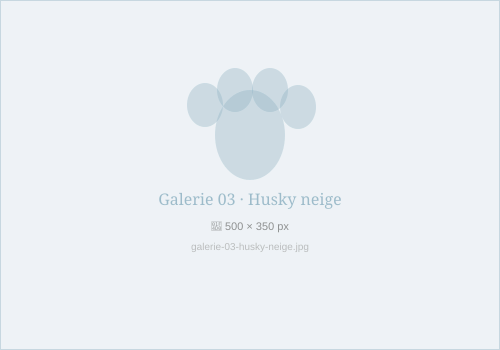
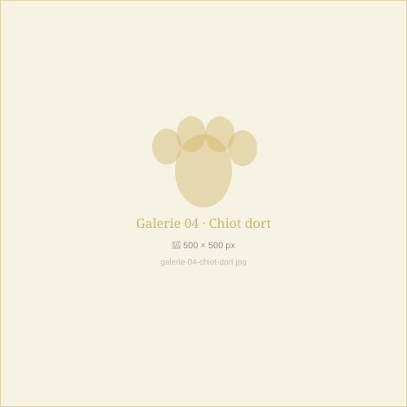
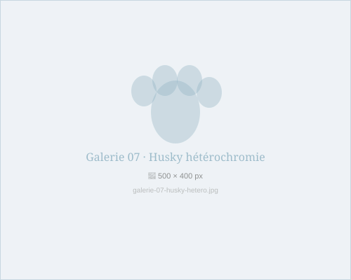
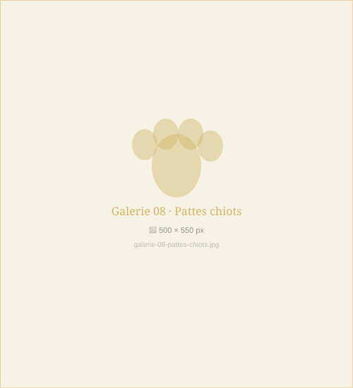
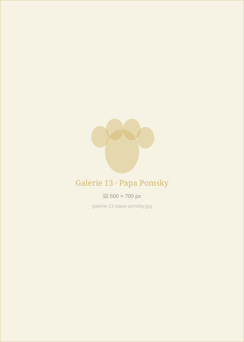
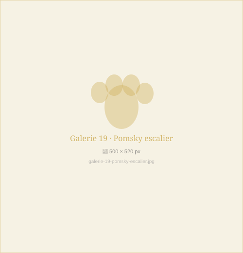
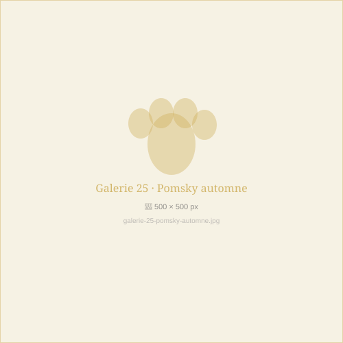
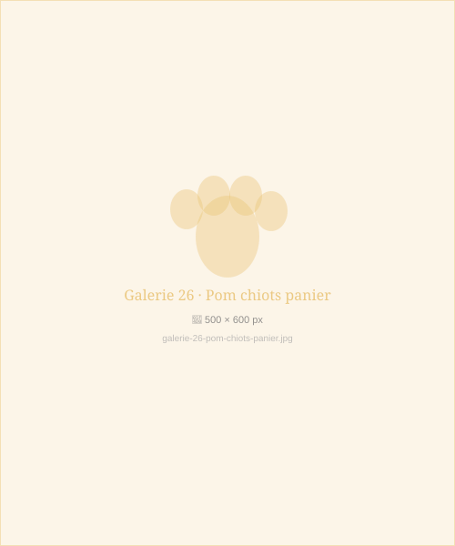
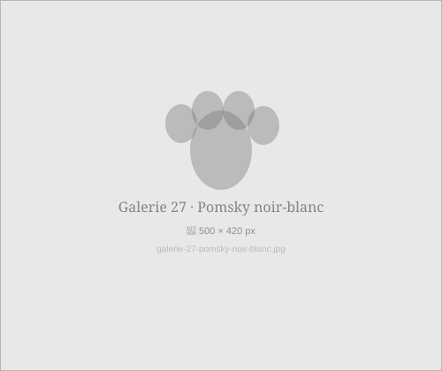

Pomsky litter · January 2025

Luna and her babies · Day 3

Arctic Jr · First winter

Golden nap

Milo's gaze

Cannelle · Morning smile

Shadow · Heterochromia

First paws · March litter

Cimes Blanches · Valais

Summer walk · Sierre

Neva · Crans meadows

End of day · Sierre

Thor · Sire

Bijou · Elite dam

Blizzard · Husky sire

Playtime · 6 weeks

First bath · Cannelle

Storm · Day 14 · First look

First big adventure

Müller family · Sion

Isabelle & Cannelle · Lausanne

Zimmermann family · Crans-Montana

Luna and baby Louis · Geneva

Lake Géronde · Sierre

Autumn gold · Sierre vineyards

Spring trio · March 2025

Zara · Arctic coat

Kiki · Chocolate coat

Blizzard · Morning sprint

Blended family · Mixed litter